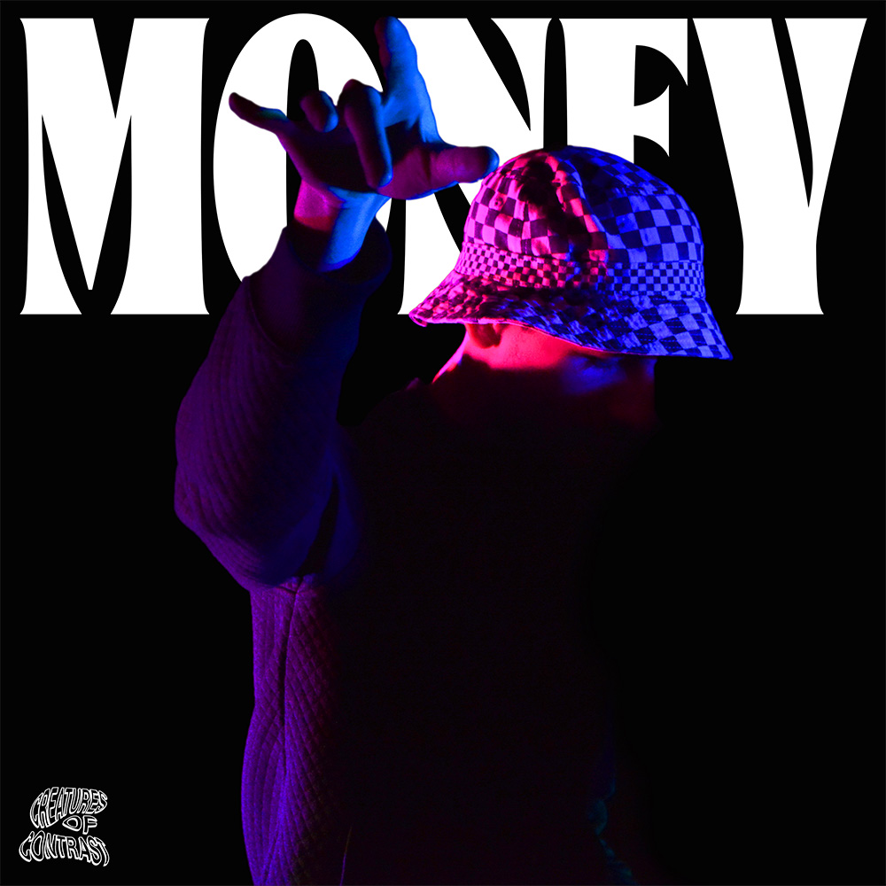
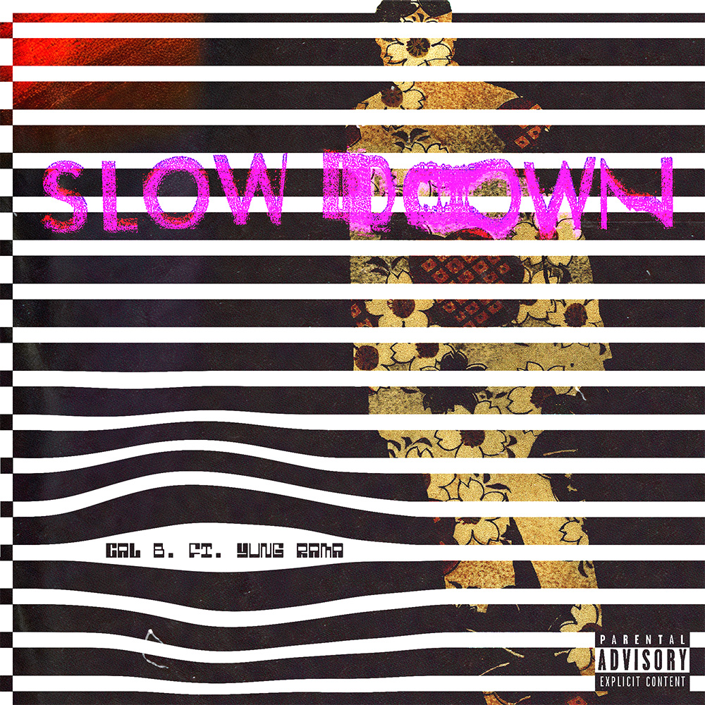

Excerpt from Spotify:
Calum Boone, otherwise known as Cal B., is a
singer/songwriter, producer, and artist from Toronto, Canada.
At a young age, he moved to the US, living in various places
along the east coast where he would be exposed to various
types of music. Despite coming from a family with no musical
background, Cal B. was involved in music from a young age,
taking piano, violin, trumpet, and vocal lessons (albeit for a
very insignificant period of time) to help him get involved.
By high school, Cal B. was experimenting with music production
in softwares like FL Studio and GarageBand, creating weird
little beats that sounded good at the time (obviously, they
were awful). By the time he was in university, he was hooked,
electing to spend more than a few of his nights creating beats instead of
sleeping. By 2020, he had released his first song, a feature
on a Yung Rama track. After countless hours watching YouTube
and learning the ways of audio engineering, Cal B. dropped his
debut single, Slow Down. Once the pandemic wrapped up, Cal B.
performed a few backyard and basement shows. It was there that
he would discover his passion for creating and performing.
Now, Cal B. spends his time honing his engineering skills and,
when he finds some time, recording and releasing the
occasional record with his friends.
about

Slow Down cover art, designed with Adobe Illustrator and scanned print. Finished in Photoshop.

The cover for 80's baby, initially designed using Photoshop's AI generative fill & further edited to perfection.